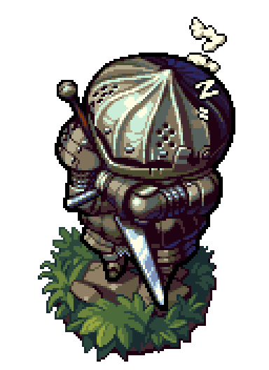

Contemplem o cebolão:
Observação: Se você não chorou no final da quest dele você já morreu por dentro tem tempos...
Tópicos do site
Aviso sobre Dark Souls 2:
Não vou falar porque achei o jogo ruim como um "Souls", apesar dele ter suas qualidades.